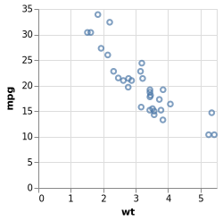
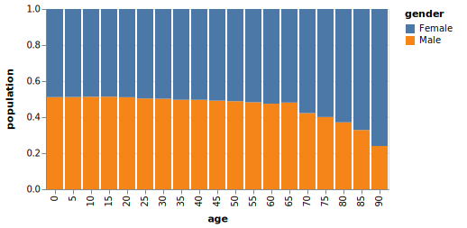

The goal of vlbuildr is to provide an R api for building up vega-lite specs.
Current status
This package is in early stages at the moment. Most of a “v0” of the public facing API has been built (although definitely not locked-down yet!).
However, the internals of the package might change substantially to provide greater robustness, make it harder to make invalid specs, and/or provide more info when making invalid spec. The current approach seeks to make it easy to build up specs, provided your input arguments are okay… but it does no checking of those inputs and you can very easily make invalid specs! Still TBD exactly how rigorous/helpful this package will aim to be with regards to bad specifications..
The documentation is also still very bare-bones. The parameter documentation for functions is fairly complete, however, as it relies on descriptions pulled directly from the Vega-Lite schema.
Building
Much of the public API is auto-generated via the build.R script in the inst directory. The script makes uses of another package, vlmetabuildr.
Examples
These are some examples showing current capabilities; see pkgdown site for more examples, including interactive ones.
library(vlbuildr)
vl_chart() %>%
vl_add_data(values = mtcars) %>%
vl_mark_point() %>%
vl_encode_x("wt") %>%
vl_encode_y("mpg") 
vl_chart() %>%
vl_add_data(url = "https://vega.github.io/vega-editor/app/data/population.json") %>%
vl_calculate(calculate = "datum.sex == 2 ? 'Female' : 'Male'",
as = "gender") %>%
vl_filter("datum.year == 2000") %>%
vl_encode(x = "age:O", y = "people:Q", color = "gender:N") %>%
vl_scale_x(rangeStep = 17) %>%
vl_stack_y("normalize") %>%
vl_aggregate_y("sum") %>%
vl_axis_y(title = "population") %>%
vl_mark_bar() 